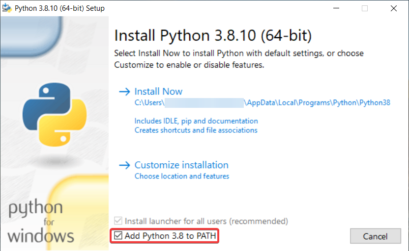

Quick Start Guide
Set Up Emulator
Download and install Cemu 1.26.2
Install Game
Dump your legitimate copy of BotW and import it into Cemu
Install BCML
Install
Python 3.8.10
and run pip install bcml
Set Up Mod
Download and install MilkBarLauncher
Comprehensive Setup Guide
1. Emulator Setup
Installing Cemu
- Download Cemu 1.26.2 (specific version required)
- Install to a safe directory (recommended: Desktop or Documents)
- Important: Do not use other versions as they may cause compatibility issues
2. Game Installation
Installing BotW
- Dump your legitimate copy of Breath of the Wild. If you are unfamiliar with this process or want to learn how, watch this video
- In Cemu, go to File > Install game title, Update or DLC
- Navigate to your game's meta folder and select meta.xml
- Repeat for Update and DLC packages
3. Mod Loader Setup
Installing BCML
-
Install
Python 3.8.10
and ensure it's added to your PATH system variable
 -
Open Command Prompt and run:
pip install bcml - Run BCML by typing
bcmlin Command Prompt - Follow the initial setup process
- Verify Cemu folder contains both Cemu.exe and settings.xml
4. Multiplayer Mod Installation
Setting up MilkBar Launcher
- Download MilkBarLauncher.zip
- Extract to C:\BOTWMP\
-
In BCML:
- Press Ctrl + I
- Click Browse
- Select C:\BOTWMP\BNPs\MilkBarLauncher.bnp
- Click Install
- Press Ctrl + M to merge mods
5. Final Configuration
Graphics and Mod Settings
- In Cemu, right-click BotW and select "Edit graphic packs"
- Click the button in the bottom right corner to download the latest community graphic packs
-
Enable the following:
- BCML
(under Mods) - Extended Memory
(under Mods) - Utilities
(under Multiplayer) - *Draw Distance
(optional, under Mods) - *FPS++
(optional, under Mods)
- BCML
-
In Cemu Options > General Settings > Graphics:
- Enable asynchronous shader compilation
- Launch the game and save after leaving the Shrine of Resurrection
6. Multiplayer Connection
For Hosts
- Install Radmin VPN
- Create a network and note down the network name and password
- Launch the MilkBarLauncher from C:\BOTWMP\MilkBarLauncher.exe, as this prepares the server
- Launch the dedicated server from C:\BOTWMP\DedicatedServer\MBL.DedicatedServer.exe
For Clients
- Install Radmin VPN
- Join the host's network using their network name and password
- Open C:\BOTWMP\MilkBarLauncher.exe
-
Click "Add Server" and configure:
- Name: (your choice)
- IP: (VPN IP from host)
- Port: 5050
- Password: (leave blank)
Frequently Asked Questions
Does the version of Cemu matter?
Yes, version 1.26.2 is required. Other versions may cause issues with the Milk Bar Launcher.
Having trouble with pip install bcml?
If you see Rust-related errors or other issues, try running:
python.exe -m pip install bcml from your Python
installation directory.
How do I play different gamemodes?
The dedicated server supports various modes. Enter 1 on startup to select a gamemode. Use the help command for specific mode instructions.